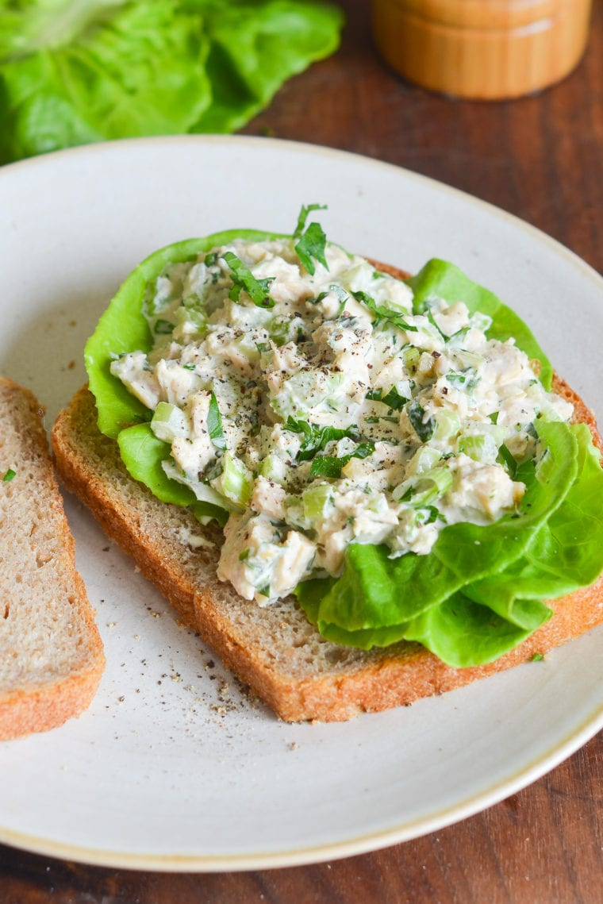

Tuna salad

Description
A classic…and the only tuna salad recipe you'll ever need.
Sometimes you just want a really good, old-school tuna salad. This is my go-to recipe.
Ingredients:
- 2 (5-ounce) cans chunk white tuna packed in water
- ½ cup mayonnaise, best quality such as Hellmann's or Duke's
- 2 ribs celery, finely diced
- 2 scallions, light and dark green parts, thinly sliced
- 1 tablespoon fresh lemon juice (from 1 lemon)
- ¾ teaspoon Dijon mustard
- 2 tablespoons sweet pickle relish
- 3 tablespoons finely chopped flat-leaf parsley
- ¼ teaspoon salt
- ¼ teaspoon freshly ground black pepper
Steps:
- Begin by draining the tuna in a fine mesh strainer.
- Use paper towels to pat and blot the tuna until completely dry.
- Transfer the tuna to a medium bowl and flake with a fork.
Add the remaining ingredients and stir until evenly combined.
- Taste and adjust seasoning, if necessary. Use immediately or store in a covered container in the refrigerator for up to three days.
